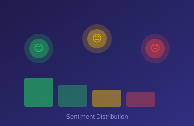
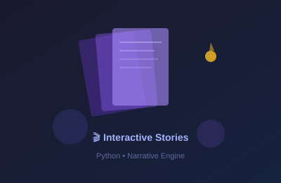
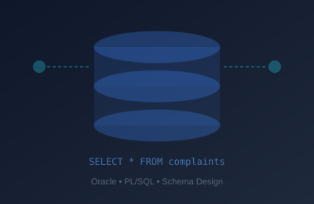
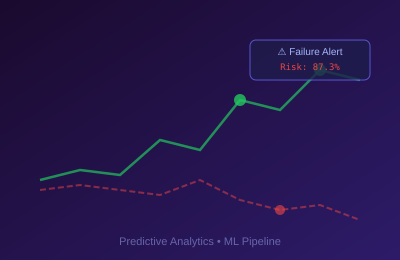
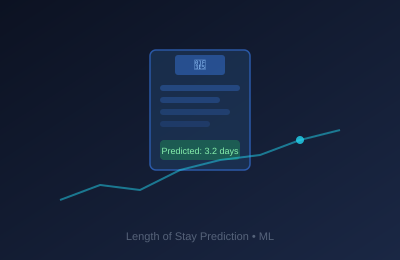

I transform raw data into powerful insights that drive strategic decisions. With expertise spanning data science, analytics engineering, and machine learning, I build solutions that make complex data simple and actionable.
Programming is my passion, especially when it comes to data. I love harnessing the power of data analytics and data science to derive insights and drive decision-making. I excel at explaining complex data concepts in a simple and understandable manner.
Beyond the data world, I enjoy painting, cooking, and following sports. These interests contribute to a well-rounded approach to my work, blending creativity, precision, and strategic thinking.
Click any card to walk through the problem, architecture, and results of systems I built and shipped at Amazon.
Built an automated carrier performance monitoring system that evaluates 6,400+ carriers against business-defined thresholds, classifies them into operational tiers, and generates coaching recommendations. Replaced a manual review process that covered only 3.9% of carriers each week.
View Case StudyDeveloped a Python and SQL reporting pipeline that retrieves operational KPIs from Redshift, generates HTML dashboards with automated trend analysis, and distributes weekly reports to leadership stakeholders. Reduced manual reporting effort by approximately 6 hours per week.
View Case StudyDeveloped an Electron and React desktop application that combines XML processing, data extraction, Excel conversion, and email generation into a single workflow. Simplified carrier operations and eliminated repetitive manual processing tasks.
View Case StudyBuilt an automated ETL workflow that ingests time-tracking data from the Clockify API, calculates productivity metrics, stores results in Redshift, and generates weekly performance scorecards for managers. Improved reporting consistency and eliminated manual scorecard creation.
View Case StudyDeveloped a serverless analytics solution using AWS Lambda, Python, and Redshift to calculate shipment-level manifest accuracy metrics and publish interactive dashboards for operational teams. Automated recurring analysis that was previously done ad-hoc.
View Case StudyAutomated carrier onboarding and compliance checks by integrating external USDOT and SCAC validation sources. Generated approval recommendations and exception reports, reducing manual verification effort from 3 days per batch to minutes.
View Case StudyAuthored and maintained 30+ production SQL queries used for Weekly Business Reviews, standardizing KPI calculations (window functions, CTEs, multi-table joins) across U.S. and Canadian carrier operations. Enabled consistent performance reporting and reduced report preparation time.
View Case Study
Analyzing millions of Amazon consumer reviews to extract themes and sentiments, identifying common issues faced by consumers using NLP techniques.

Developed a storybook application in Python using various packages, enabling the creation and interactive display of custom story narratives.

Comprehensive customer complaints management database in Oracle, dedicated to recording and addressing product, account, and service issues.

Predicting device failures by analyzing historical data and identifying patterns that signal trouble using advanced ML algorithms.

Predicting patient length of stay in hospitals using machine learning techniques to optimize resource allocation and improve care delivery.
Understanding project requirements through detailed discussions to capture every aspect of the problem.
Creating detailed plans with efficient resource allocation and timeline management for project milestones.
Deriving meaningful insights through rigorous data analysis to drive informed decision-making.
Clean, hand-coded solutions ensuring integrity and efficiency of the underlying codebase.
Encouraging iterative review processes, accommodating changes and revisions to enhance deliverables.
Continuous improvement with on-time delivery and lifetime support for all projects.
I'm always open to discussing new opportunities, collaborations, or just chatting about data. Feel free to reach out.